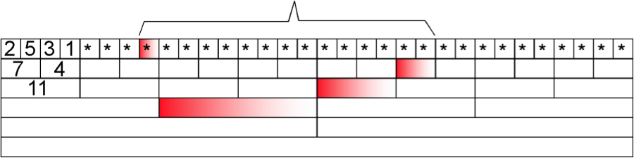

紅蘿蔔倉庫
小兔子魯比為了幫助村民度過即將來臨的寒冬，建造了個有32間儲藏室的倉庫來存放紅蘿蔔。為了掌握紅蘿蔔的量，魯比用表格登記每間儲藏室的紅蘿蔔重量。以下表第一列為例，魯比在前四間儲藏室分別存放了2公斤、5公斤、3公斤和1公斤的紅蘿蔔。其他儲藏室的紅蘿蔔重量先用星號（*）隱藏起來。

為了快速得知連續幾間儲藏室中紅蘿蔔的總重量，魯比擴充原本的表格；將儲藏室兩兩為一組，並且將同一組儲藏室的紅蘿蔔重量加起來，填到表格的下一列。如上表，前兩間儲藏室為一組，加總得到7公斤後填到下一列；第三和四間儲藏室為一組，加總得到4公斤。魯比持續將數字兩兩為一組加總並填到下一列，直到只剩下一個數字為止（這個數字相當於倉庫中所有紅蘿蔔的重量）。
使用這個表格可以快速計算連續儲藏室的紅蘿蔔重量總和。舉例來說，如果要知道第八間到第二十二間儲藏室的紅蘿蔔重量總和，魯比不用一間一間累加，他只要將上表中四個紅色格子的數字加總即可。因此，原先要將15個數字加總，透過這個表格只要將4個數字加總即可。
請問透過這樣的方式，用最少數字相加來計算任意連續儲存室的紅蘿蔔重量總和，最多需要將幾個數字加總？